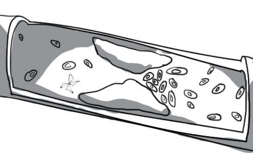
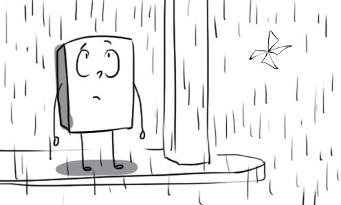
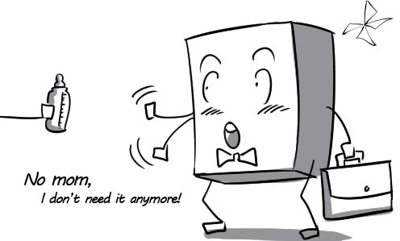
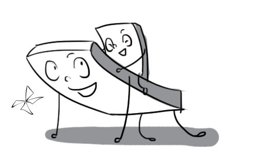
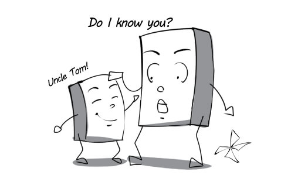

1
close-knit: My class is a close-knit group, everyone helps each other very well.

2
endure: It seemed impossible that anyone could endure such a pain without crying.

3
fatherhood: Fatherhood is a lifelong responsibility.

4
relate: Researchers are trying to relate low exam results with large class sizes.
5
rival: He was shot by a member of a rival gang.

6
temperament: Jill has such an easy temperament; she has never got angry with anybody.

7
tie: Family meals make strong family ties because everyone can have a chance to share their feelings.

8
upbringing: Is it right to say that Jacob's bad characters were the result of his parents' poor upbringing?

9
acute: An acute illness is one that has quickly become severe and dangerous.
10
allergic: I like cats, but unluckily I'm allergic to them.
11
anxious: Children normally feel anxious about their first day at school because they have no parents beside.

12
artery: While artery carries blood from the heart to other parts of the body, vein carries blood in reverse order.

13
asset: Knowledge of controlling money is a real asset when you work in banking area.
14
brisk: As a successful businesswoman, Choe always walks with confident and brisk steps.
15
chronic: My grandma gets a chronic disease; there are no ways to cure it except for living with it.
16
counteract: These healthful exercises aim to counteract the effects of tiredness.
17
crave: A lot of women crave for lemon juice when they are pregnant.

18
curb: Scientists are finding ways to curb the spread of this dangerous virus.

19
cure: Many types of cancer can now be cured; they're not deadly disease any more.

20
diagnose: The test is used to diagnose many kinds of illness.

21
dietician: My daughter ate a lot but keeps getting thinner, so I took her to an dietician.

22
diminish: I will remember all the time we spent together; these memories will not be diminished by time.

23
disorder: Hundreds of people was prisoned after a civil disorder.

24
disrupt: A heavy fall of snow disrupted the city's transport system.

25
eliminate: Fast foods like KFC should be eliminated from your diet if you don't want to get fat.

26
harm: Missing a meal once in a while never did anyone any harm.

27
infectious: Flu is highly infectious; you can get it easily if people around you have it.
28
ingredient: Trust is an important ingredient in a successful marriage.

29
insomnia: If you suffer from insomnia, you are not able to sleep.

30
intake: Try to reduce your intake of fat if you want to be slimmer.

31
moderate: Even moderate amounts of alcohol can be dangerous.

32
nutritious: The cookbook contains many simple but highly nutritious meals.

33
onset: The new cure can delay the onset of the disease by several years.
34
persistent: There is persistent rain these days; I even cannot see the sun.

35
portion: The portions are very generous in this restaurant. Don't worry about being hungry!
36
stimulate: Good teachers should ask questions that stimulate students to think and answer.

37
stroke: If you have a stroke, you may die or be unable to use some muscles.

38
symptom: Edward complains about all the usual flu symptoms - a high temperature, headache and so on.

39
therapy: The best therapy for a cold is to rest and drink lots of water.

40
trigger: Certain forms of mental illness can be triggered by food allergies.

41
variety: When preparing meals, you need to think about variety and taste as well as nutritional value.

42
vital: Vitamins from fruits are very vital for your health, so you should eat them everyday.

43
adolescence: Adolescence is the time in a person’s life when he or she develops from a child into an adult.
44
adopt: Angie and Brad have three children of their own and adopt three children from different countries.
45
adulthood: People in Britain legally reach adulthood at 18 years old.

46
bond: There is a special bond between mother and child. Most mothers love their children.

47
brotherhood: Most European countries are living in peace and brotherhood at present.

48
character: Politeness is a traditional part of the British character.

49
childhood: Human's life includes childhood, adolescence and adulthood.

50
close: Lauren's relationship with her father isn't good, but she's very close to her mother.
51
conflict: Jonny and his father cannot live in the same house because there is a lot of conflicts between them.

52
develop: Singapore developed from a small fishing village into the richest country in South East Asia in only a short time.

53
establish: The World Health Organization was established in 1948.

54
inherit: She inherited a fortune from her father when he died.

55
instinct: When Mike saw a tiger on the road, his first instinct was to run away.
56
interact: Professors have little time to interact with each student, so they cannot know each other well.

57
maternal: Annie is very warm and maternal; she is the most wonderful mother I have ever known.

58
motherhood: Modern women have difficulties in combining career with motherhood.

59
nature: Heaven's jealous when seeing her boyfriend going with another girl; it's only human nature.
60
nurture: Jenny stays at home and nurtures her children while her husband tries to earn money.

61
parental: Children who do not have parental care are more likely to become bad parents in the future.
62
paternal: Leo is very paternal; it's lovely to see him playing with his baby.

63
pregnant: Jack got his girlfriend pregnant, so they had to get married early.
64
relative: Cleo was very happy because all her relatives and friends came to her wedding.

65
resemble: Unsurprisingly, the twins Jack and Cody resemble each other very closely.

66
rewarding: Teaching can be a very rewarding career; you can get not only high salary but also love from your students.

67
sibling: I have three siblings: two brothers and a sister.
68
stable: After several part-time jobs, he's now got a stable job in a bank.

69
trust: Don't put your trust in Tim; he always tell lies.

70
alternate: Sam and Kalin take care of their new baby in alternate days because both are very busy working.
71
appetite: I seem to have lost my appetite lately; I don't want to eat anything.

72
avoid: I try to avoid supermarkets on Saturdays and Sundays. They're always too busy.

73
benefit: The finding of oil brought to the town many benefits, including money and fame.

74
depress: Failure cannot depress a strong man like Lincoln.

75
diet: Rice is the most important food in Vietnamese diet.

76
disease: Bad weather and polution caused many diseases for people.

77
essential: Even in small companies, computers are essential tools.

78
exercise: Haley usually exercises (does exercise) most evenings by running.

79
factor: We liked both houses, but price was the deciding factor.

80
fat: I didn't like the meat; there was too much fat on it.
81
healthy: Keep healthy by eating well and exercising regularly.

82
maintain: Despite living in different countries, the two families have maintained close links for over 10 years.

83
muscular: Because Hugh Jackman has a very muscular body, a lot of girls all over the world are crazy about him.

84
nutrient: A healthy diet should provide all important nutrients.
85
obesity: A diet that is high in fat can lead to obesity.

86
overdo: Use a few photographs to make your lesson more interesting, but don't overdo it.
87
overeat: Don't overeat, otherwise you will get obesity.

88
overweight: Jane used to be very overweight, but now she is slim enough to be a model.
89
prevent: Daniel's back injury may prevent him from playing in tomorrow's game.

90
recommend: In this restaurant, I can recommend the chicken in mushroom sauce - it's delicious, the waiter said.

91
recover: Tom is in hospital, recovering from a heart attack. He is much better now.
92
reduce: My weight reduces when I stop eating sugar.

93
regular: Dominich phones us every Sunday at six, regular as clockwork.
94
risk: It's always a risk when starting up a new business.

95
skip: Williams skipped the football game to be with his wife in the hospital; she was very happy about this.

96
stress: People under a lot of stress may experience headaches, pains and sleeping difficulties.

97
taste: The soup has very little taste; it's like water to me.

98
weight: The average weight of a baby at birth is just over seven pounds.